fotografe ou escreva.
a câmera e o campo de texto ficam na tela principal. Uma foto do prato ou uma frase como “duas maçãs”.
o nevy junta comida, treino e corrida no mesmo dia. Fotografe o prato ou escreva “duas maçãs”, e a refeição entra.
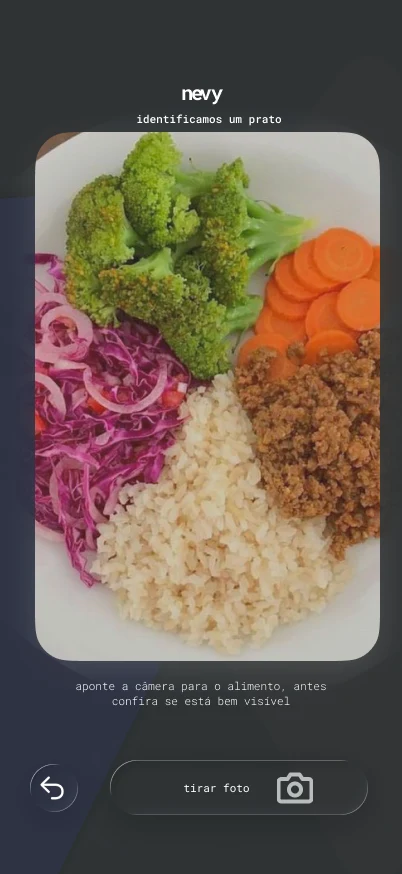
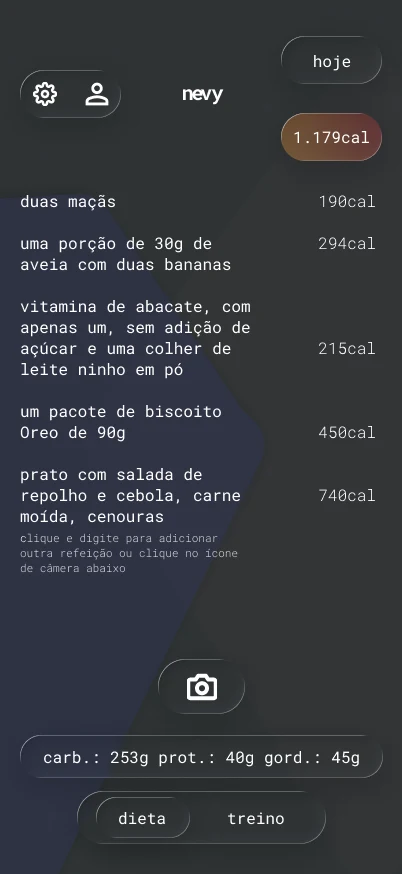
como funciona
a câmera e o campo de texto ficam na tela principal. Uma foto do prato ou uma frase como “duas maçãs”.
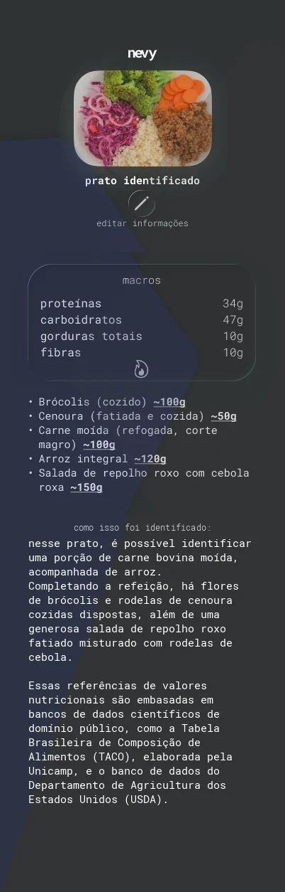
o nevy sugere os alimentos, as porções e os macros. Você edita o que quiser, e nada entra no histórico até você tocar em registrar.
calorias, macros e refeições escritas do jeito que você falaria. Sem abrir menus para saber como você está.
treino e corrida
o app sugere o treino do dia. Você toca em continuar e vai marcando cada exercício. A corrida mede tempo, distância, ritmo, percurso e elevação, e a sessão aparece na tela de bloqueio. Comida, treino e corrida ficam juntos no calendário.
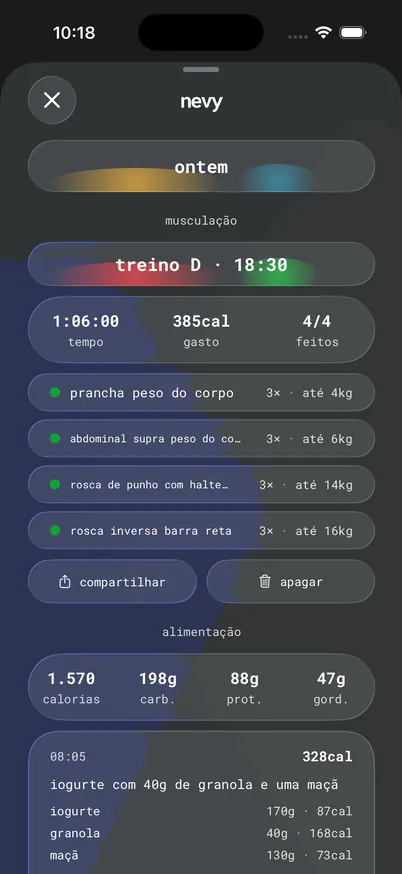
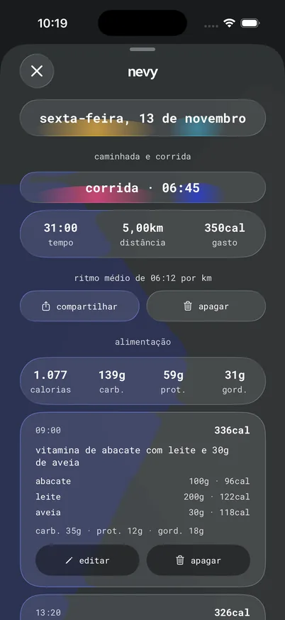
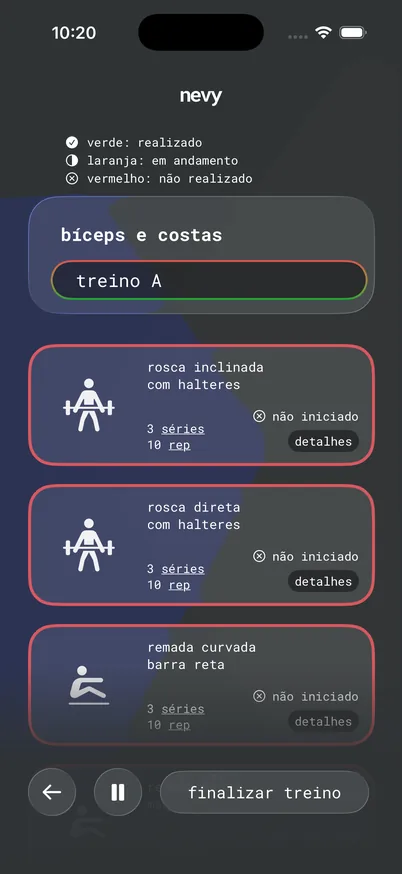
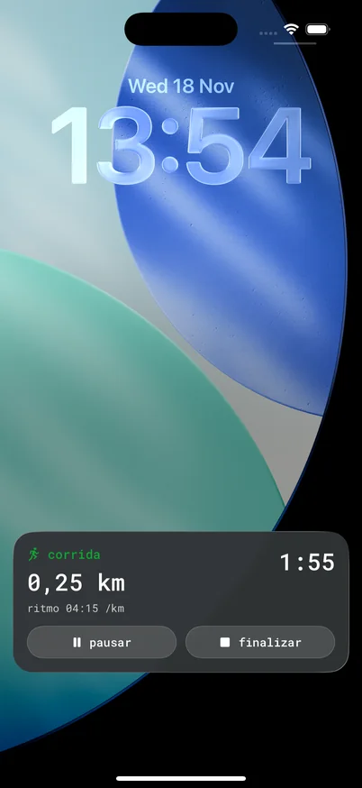
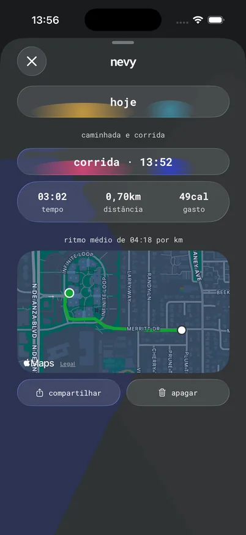
corrida
durante a corrida, o tempo, a distância e o ritmo ficam na tela de bloqueio, com pausar e finalizar a um toque. Ao terminar, o percurso fica desenhado no mapa dentro do dia, junto do que você comeu e treinou.
metas
perder peso, ser mais saudável ou ganhar hipertrofia. A meta nunca desce abaixo da sua taxa metabólica basal, e os comentários não julgam nem mandam comer menos. Quem prefere não ver números pode ligar um modo que mostra o dia só com indicadores.
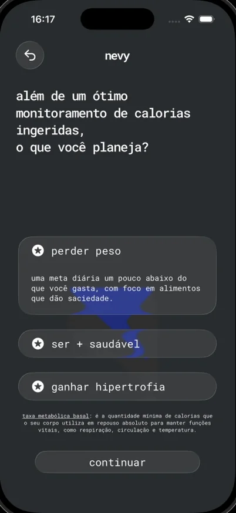
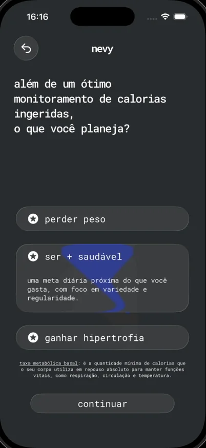
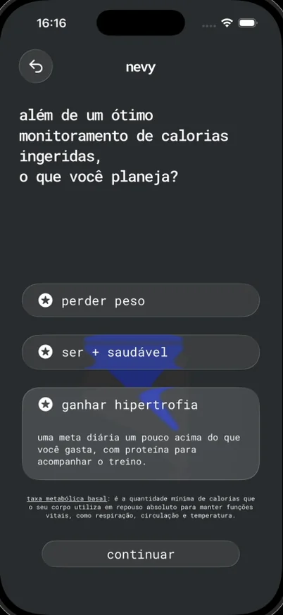
no dia a dia
privacidade
refeições, treinos, corridas e peso ficam guardados no seu aparelho. O nevy não tem anúncios nem rastreamento e não vende dados. Os termos de uso e a política de privacidade ficam dentro do app, em linguagem comum, e você apaga a conta e tudo o que ela guardou com um toque.
em construção
o nevy ainda não está na App Store. Ele está em desenvolvimento e em testes no iPhone, e as telas desta página são do app de verdade, rodando. Algumas coisas ainda vão mudar até o lançamento.
quer ser dos primeiros?
me avise quando sair.é um e-mail direto para mim, sem cadastro. Eu aviso quando houver teste ou lançamento.
como o nevy foi desenhado e programado: ver o case →